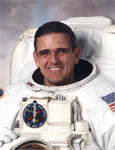

Lyndon B. Johnson Space Center
Houston, Texas 77058
|
National Aeronautics and Space Administration Lyndon B. Johnson Space Center Houston, Texas 77058 |
 |
Biographical Data |
||
William Surles "Bill" McArthur, Jr., (Colonel, U.S. Army, Ret.)
Director, Safety & Mission Assurance, Johnson Space Center
Pronunciation: WIHL’-yuhm Muhk-AR’-ther
PERSONAL DATA: Born July 26, 1951, in Laurinburg, North Carolina. His hometown is Wakulla, North Carolina. Married to the former Cynthia Kathryn Lovin of Red Springs, North Carolina. They have two daughters and four grandchildren. He enjoys biking, photography and working with personal computers. His parents, Brigadier General William S. McArthur and Edith P. Avant, and stepfather, Weldon C. Avant, are deceased.
EDUCATION: Graduated from Red Springs High School, Red Springs, North Carolina, 1969; received a Bachelor of Science degree in Applied Science and Engineering from the U.S. Military Academy, West Point, New York, 1973, and a Master of Science degree in Aerospace Engineering from the Georgia Institute of Technology, 1983.
ORGANIZATIONS: American Institute of Aeronautics & Astronautics (AIAA); Army Aviation Association of America; Association of the U.S. Army; U.S. Military Academy Association of Graduates; West Point Society of Greater Houston; MENSA; Phi Kappa Phi and the Association of Space Explorers.
SPECIAL HONORS: Army Distinguished Service Medal; Defense Superior Service Medal; Defense Meritorious Service Medal (First Oak Leaf Cluster); Meritorious Service Medal (First Oak Leaf Cluster); Army Commendation Medal; NASA Space Flight Medal; NASA Distinguished Service Medal; NASA Outstanding Leadership Medal; NASA Exceptional Service Medal; Russian Federation Medal of Merit for Space Exploration; Distinguished Graduate of the U.S. Army Aviation School; Honorary Doctor of Science degree from the University of Strathclyde, Glasgow, Scotland; Honorary Doctor of Science degree from the University of North Carolina at Pembroke; Recipient of the Order of the Long Leaf Pine, North Carolina’s highest civilian award; Georgia Tech Academy of Distinguished Engineering Alumni, 1996; Komarov Diploma from the Federation Aeronautique Internationale (FAI) 1993, 2006; American Astronautical Society Flight Achievement Award, 1996; Visiting Green Honors Professor, Department of Science and Engineering, Texas Christian University, 1997; Ellis Island Medal of Honor; Order of Saint Michael (Gold and Silver Awards) from the Army Aviation Association of America; Robert M. Leich Award from the Army Aviation Association of America, 2000; Korolev Diploma presented by the FAI, 2000; West Point Distinguished Graduate Award, 2011; Georgia Tech College of Engineering Hall of Fame, 2013.
EXPERIENCE: : McArthur graduated from West Point in June 1973 and was commissioned as a second lieutenant in the U.S. Army. Following a tour with the 82nd Airborne Division at Fort Bragg, North Carolina, he entered the U.S. Army Aviation School in 1975. He was the top graduate of his flight class and was designated an Army aviator in June 1976. He subsequently served as an aeroscout team leader and brigade aviation section commander with the 2nd Infantry Division in the Republic of Korea. In 1978, he was assigned to the 24th Combat Aviation Battalion in Savannah, Georgia, where he served as a company commander, platoon leader and operations officer. After completing studies at Georgia Tech, he was assigned to the Department of Mechanics at West Point as an assistant professor. In June 1987, he graduated from the U.S. Naval Test Pilot School and was designated an experimental test pilot. Other military schools completed include the Army Parachutist course, the Jumpmaster course and the Command and General Staff Officers’ course.
McArthur retired from the U.S. Army in 2001.
A master army aviator, he has logged more than 9,000 flight hours in 41 different air/spacecrafts.
NASA EXPERIENCE: McArthur was assigned to NASA’s Johnson Space Center in August 1987 as a space shuttle vehicle integration test engineer. Duties involved serving as the engineering liaison for launch and landing operations of the space shuttle. He was actively involved in the integrated test of the flight control system for each orbiter for its return to flight and was a member of the Emergency Escape and Rescue Working Group.
Selected by NASA in January 1990, McArthur became an astronaut in July 1991. Since then, McArthur has held various assignments within the Astronaut Office, including working issues relating to the solid rocket booster, redesigned solid rocket motor and the advanced solid rocket motor. He served as chief of the Astronaut Office Flight Support branch, supervising astronaut support of the Mission Control Center, prelaunch space shuttle processing and launch and landing operations. McArthur also served as director of operations overseeing training activities for astronauts in Star City, Russia and, later, as chief of the Astronaut Office Space Station branch. McArthur served as commander on the Expedition 8 and 10 backup crews. A veteran of four spaceflights, McArthur has logged 224 days, 22 hours, 28 minutes and 10 seconds in space, including 24 hours and 21 minutes of spacewalk time in four spacewalks. Subsequent assignments included manager of the space shuttle safety and mission assurance office and as the space shuttle orbiter project manager. McArthur currently serves as the director of safety and mission assurance for the Johnson Space Center.
SPACEFLIGHT EXPERIENCE: STS-58 Columbia (October 18, 1993 through November 1, 1993) was launched from NASA’s Kennedy Space Center, Florida, and returned to land at Edwards Air Force Base, California. During the mission, the crew performed neurovestibular, cardiovascular, cardiopulmonary, metabolic and musculoskeletal medical experiments on themselves and 48 rats, expanding our knowledge of human and animal physiology both on Earth and in spaceflight. In addition, the crew performed 16 engineering tests aboard the orbiter Columbia and 20 Extended Duration Orbiter Medical Project experiments. Additionally, the crew made extensive contacts with school children and amateur radio operators around the world through the Shuttle Amateur Radio experiment. The STS-58 mission was accomplished in 225 Earth orbits in 336 hours, 13 minutes and 1 second.
STS-74 Atlantis (November 12, 1995 through November 20, 1995) was NASA’s second space shuttle mission to rendezvous and dock with the Russian Space Station Mir. STS-74 was launched from and returned to land at Kennedy Space Center, Florida. During the eight day flight, the crew successfully attached a permanent docking module to Mir, conducted experiments on a number of secondary payloads and transferred one-and-a-half tons of supplies between Atlantis and Mir. The STS-74 mission was accomplished in 129 Earth orbits, traveling 3.4 million miles in 196 hours, 30 minutes and 44 seconds.
STS-92 Discovery (October 11, 2000 through October 24, 2000) was launched from Kennedy Space Center and returned to land at Edwards Air Force Base, California. During the 13 day flight, the seven member crew attached the Z1 Truss and Pressurized Mating Adapter 3 to the International Space Station (ISS) using Discovery’s robotic arm and performed four spacewalks to configure these elements. This expansion of the ISS opened the door for future assembly missions and prepared the station for its first resident crew. McArthur’s spacewalk time totaled 13 hours and 16 minutes. The STS-92 mission was accomplished in 202 Earth orbits, traveling 5.3 million miles in 12 days, 21 hours, 40 minutes and 25 seconds.
Expedition 12 (September 30, 2005 through April 8, 2006). McArthur was the commander and ISS science officer on the Expedition12 crew, which launched from the Baikonur Cosmodrome in Kazakhstan on September 30, 2005 aboard a Soyuz TMA spacecraft and docked with the space station on October 3, 2005. During a 6-month tour of duty aboard the station, the crew conducted two spacewalks and relocated their Soyuz spacecraft twice; becoming the first ISS crew to dock to every Russian docking port on the complex. They also became the first two-person crew to conduct a spacewalk in both Russian and U.S. spacesuits. The mission was accomplished in 189 days, 19 hours and 53 minutes and included 11 hours and 5 minutes of spacewalk time.
SEPTEMBER 2014